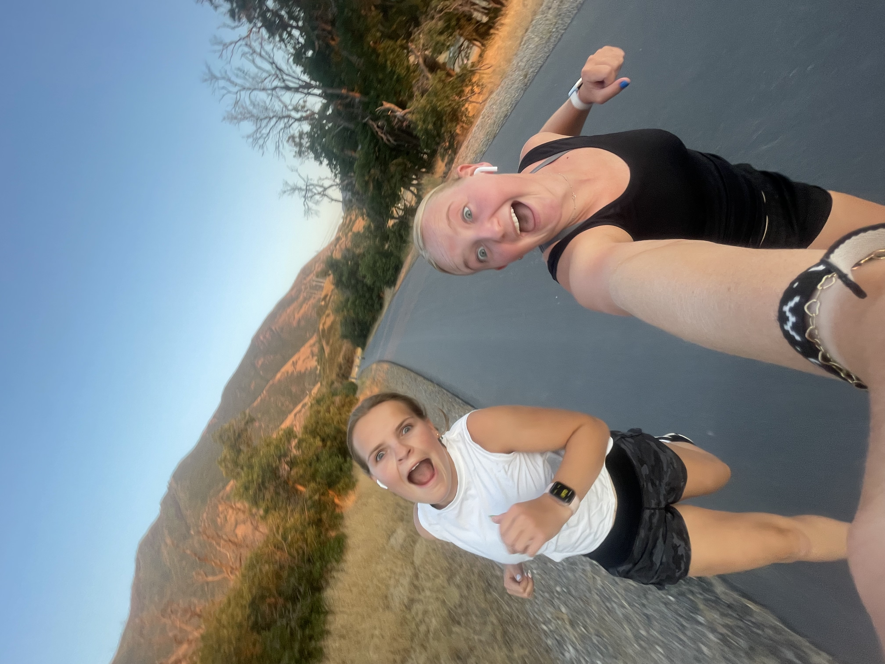

Slow Runner's Club
This is my from scratch page
Professional Page
AI Sudoku Game
My Running Journey
There was a time when you dreaded the thought of running. Back in high school gym class,
every semester started with the infamous mile run. The coach would bark, "Four laps around the track!"
as if it were the easiest thing in the world. But to you, those four laps felt like an eternity.
It wasn't just the physical struggle—it was the feeling of being on display. As someone who
thrived in activities like pickleball, where you could strategically outwit your opponents or
have fun with a doubles partner, running felt monotonous and lonely. Worse, you couldn't hide
from the stopwatch. Each lap was timed, and you'd hear your coach announce your splits, louder
than necessary. "Two minutes, forty seconds!" he'd yell, as you wheezed by, feeling like you
were dragging cinder blocks.
The worst part? Your friends didn't mind the run—they even seemed to enjoy it. You’d see them
effortlessly chatting as they loped along, while you were just trying to survive. By the third
lap, your legs felt like jelly, and you’d inevitably start walking. "Come on! Push through!"
your coach would shout, but it felt like he just didn’t understand.
Does this story sound familiar, because it does to me. I used to despise running, but I have learned to love it
and here's how you can love it too:
- Run outside
- Find a running buddy
- Pick out fire soundtrack together
- Buy Cute Matching Outfits
- Pick a time to run togehter
- Believe in yourself. Running is a tough mind battle
